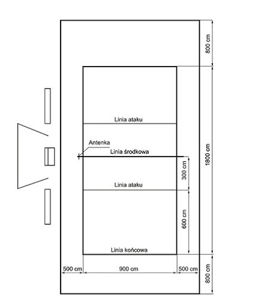

Stworzyłam stronę o siatkówce, gdyż jest to mój ulubiony sport, a jednocześnie hobbi.
Uprawiam ten sport już wiele lat i wciąż sprawia mi przyjemność. Uwielbiam grać w niego ze znajomymi.
Zasady gry w siatkówkę
Siatkówka polega na odbijaniu piłki dowolną częścią ciała (najczęściej rękoma) tak, aby przeleciała ona nad siatką i dotknęła połowy boiska należącej do przeciwnika.
Każdy zespół może wykonać trzy odbicia – odbiór, wystawa i atak - każde następne jest błędem. Punkty zdobywa się na wiele sposobów, na przykład, gdy piłka dotknie połowy boiska przeciwnika lub gdy upadnie ona poza boiskiem, a rywal dotknął jej jako ostatni.
Gra toczy się do momentu, gdy jedna z drużyn wygra 3 sety (w grupach młodzieżowych 2 – młodziczki i młodzicy) - w każdym z nich rywalizacja toczy się do zdobycia 25 punktów przy przewadze co najmniej dwóch punktów. Przy wyniku 24:24 gra toczy się "na przewagi", dopóki któraś z drużyn osiągnie dwupunktową przewagę nad drugą.
Wyjątek stanowi piąty set, nazywany "setem decydującym", który jest rozgrywany, jeśli stan meczu po 4 setach wynosi 2:2. W tym secie zawodnicy grają do 15 punktów, również przy przewadze co najmniej dwóch punktów.
Zasady gry są ustalone przez Międzynarodową Federację Piłki Siatkowej i zawarte są w przepisach gry w piłkę siatkową. Modyfikacji przepisów dokonuje FIVB, zwykle przy okazji ważniejszych imprez, tj. mistrzostw świata czy igrzysk olimpijskich. Przepisy ewoluowały na przestrzeni lat.
Największe w ostatnich latach zmiany, opisane poniżej, zostały wprowadzone w 1998 roku, podczas mistrzostw świata w Japonii. Wcześniej set kończył się po zdobyciu 15 punktów, a drużyna zdobywała je tylko przy własnej zagrywce, nie istniała także pozycja libero.
Ostatnia duża nowelizacja przepisów miała miejsce w 2008 roku, wtedy w zawodach organizowanych przez FIVB weszła ona w życie 1 stycznia 2009 roku, a w rozgrywkach w Polsce zaś od sezonu 2009/2010. Zmiany te dotyczyły: stosunku do kontaktu zawodnika z siatką – stał się on bardziej liberalny;
w uproszczeniu − błędem było tylko dotknięcie górnej 7-centymetrowej taśmy, inny kontakt nie był uważany za błąd, chyba że wpływał na grę, oraz przyśpieszona została procedura zmian zawodników. Zgodnie z tymi przepisami może być do dwóch libero, a składy drużyn mogą liczyć maksymalnie 12 zawodników wpisanych do protokołu.
W sezonie 2015/2016 przywrócono przepis zabraniający dotykania siatki w jakimkolwiek miejscu, a kontakt zawodnika z siatką jest uznawany za błąd i powoduje stratę punktu.
Wymiary boiska do gry w siatkówkę
Boisko do gry jest prostokątem o wymiarach 18 na 9 metrów ograniczonym dwiema liniami końcowymi i dwiema liniami
bocznymi i otoczonym strefą wolną o szerokości co najmniej 3 m z każdej strony (na zawodach organizowanych przez FIVB wolna strefa musi mieć co najmniej: 8 m za liniami końcowymi i 5 m za bocznym boiska). Wszystkie linie końcowe i boczne wykreślone są wewnątrz boiska.
Oś linii środkowej dzieli boisko na dwa równe pola o wymiarach 9 na 9 m każde. Na każdej stronie wyznaczona jest
strefa ataku, ograniczona linią środkową, liniami bocznymi i linią ataku znajdującą się 3 m od osi linii środkowej i wpisaną w strefę ataku. Ponadto istnieje strefa zagrywki o szerokości 9 m i głębokości równej szerokości wolnej strefy.
Boisko przedzielone jest siatką, umieszczoną nad osią linii środkowej. Jej górna krawędź powinna znajdować się na wysokości 2,43 m dla mężczyzn i 2,24 m dla kobiet (dla młodzików 2,35 m i młodziczek 2,15 m[a]).
Na dwóch końcach siatki (nad liniami bocznymi) wysokość siatki powinna być taka sama, jednak nie może być większa niż 2 cm ponad wysokość przepisową.
Do siatki mocowane są tzw. antenki, wystające 80 cm ponad taśmę górną. Ograniczają one strefę przejścia piłki nad siatką. Jeśli piłka dotknie antenki, traktowane jest to jako aut.
Odmiany siatkówki
Siatkówka rozwija się obecnie w wielu odmianach. Powstały one z powodu różnorodności miejsc rozgrywania spotkań a także specyfiki grających zawodników:
klasyczna (halowa) – pierwsza, najbardziej popularna odmiana. Mecze rozgrywane są w halach lub na otwartych boiskach o takich samych parametrach,
plażowa – rozgrywki toczą się na piaszczystych boiskach lub plażach. Najczęściej w spotkaniach uczestniczy mniej zawodników, na przykład według zasad stosowanych na igrzyskach olimpijskich – dwóch w każdej drużynie. Zmieniono także przepisy dotyczące gry, mimo że większość elementów techniki gry jest podobna,
odmiana tradycyjnej piłki siatkowej, wymyślona jako sport dla osób niepełnosprawnych, uprawiana również przez pełnosprawnych siatkarzy. Jest połączeniem sitzballu oraz siatkówki.